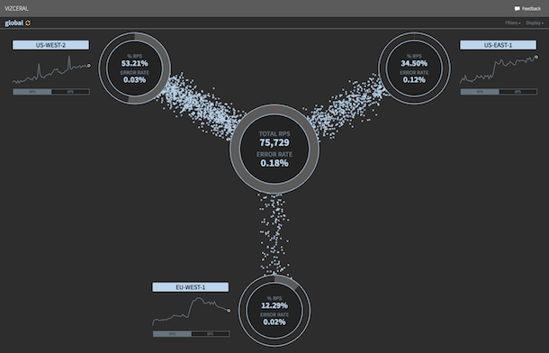

Scannez le QR code ou entrez le code sur votre téléphone.
Cours
Comprendre ce qui se passe en production
graph LR C[Client] --> LB[Load balancer] LB --> A1[API 1] LB --> A2[API 2] LB --> A3[API 3] A1 --> PG[(PostgreSQL)] A1 --> B[Banque] A1 --> R[RabbitMQ] R --> L[Service livraison]
Acte 1
Monitoring, alerting, logs, observabilité
Vérifier à intervalle régulier une assertion
Un test unitaire, mais en production
Tout le reste
| Question | Outil |
|---|---|
| Est-ce que ça marche ? | Monitoring |
| Qui doit réagir ? | Alerting |
| Que s'est-il passé pour cette requête ? | Logs |
| Pourquoi ça ne marche pas ? | Observabilité |
| Disponibilité | Panne autorisée par an |
|---|---|
| 99 % | 3,65 jours |
| 99,9 % | 8 h 45 |
| 99,99 % | 52 minutes |

Un standard pour produire les signaux
| Signal | Répond à |
|---|---|
| Logs | Que s'est-il passé ? |
| Métriques | Combien, à quelle vitesse ? |
| Traces | Par où est passée la requête ? |
| Baggage | Quel contexte transporter avec elle ? |
Acte 2
Écrire des logs qu'on pourra relire
| Niveau | Exemple FraisDirect |
|---|---|
ERROR |
La base ne répond plus, la commande est perdue |
WARN |
La banque a répondu en erreur, on réessaie |
INFO |
Commande 42 créée |
DEBUG |
Détail du calcul des frais de livraison |
TRACE |
Chaque ligne du panier |
DEBUGINFOWARNERROR
log.info("Commande créée");
log.info("Commande {} créée pour le client {}, {} centimes",
commande.id(), commande.client(), commande.montant());
graph LR
A1[API 1] --> Col[Collecteur]
A2[API 2] --> Col
A3[API 3] --> Col
L[Service livraison] --> Col
Col --> S[("Stockage : Loki, Elasticsearch")]
S --> G[Grafana, Kibana]
Un seul endroit pour chercher, au lieu de quatre serveurs
Acte 3
Des chiffres sur l'application, dans le temps
Une mesure de quelque chose dans l'application
graph TD P[Prometheus] -->|GET toutes les 15 s| A[API]
Le système interroge l'application
graph TD A[API] -->|envoie| I[InfluxDB]
L'application pousse ses mesures
Pour le projet
build.gradle
implementation "org.springframework.boot:spring-boot-starter-actuator"
implementation "io.micrometer:micrometer-registry-prometheus"
Pour le projet
application.yaml
management:
endpoints:
web:
exposure:
include: health,info,prometheus
Pour le projet
GET /actuator/prometheus
# TYPE http_server_requests_seconds summary
http_server_requests_seconds_count{method="POST",uri="/commandes"} 1532
http_server_requests_seconds_sum{method="POST",uri="/commandes"} 412.7
# TYPE jvm_memory_used_bytes gauge
jvm_memory_used_bytes{area="heap"} 1.43E8
| Type | Exemple FraisDirect |
|---|---|
| Compteur (Counter) | Commandes passées |
| Durée (Timer) | Temps de passage d'une commande |
| Jauge (Gauge) | Messages en attente dans RabbitMQ |
| Distribution (Distribution summary) | Montant des paniers |
public void passerCommande(Commande commande) {
commandesPassees.increment();
chrono.record(() -> {
try {
verifierStock(commande);
payer(commande);
publierEvenement(commande);
} catch (RuntimeException e) {
commandesEchouees.increment();
throw e;
}
});
}
public interface CommandeService {
void passerCommande(Commande commande);
}
public class CommandeServiceImpl implements CommandeService {
public void passerCommande(Commande commande) {
verifierStock(commande);
payer(commande);
publierEvenement(commande);
}
}
public class CommandeServiceMesure implements CommandeService {
private final CommandeService delegue;
public void passerCommande(Commande commande) {
commandesPassees.increment();
chrono.record(() -> {
try {
delegue.passerCommande(commande);
} catch (RuntimeException e) {
commandesEchouees.increment();
throw e;
}
});
}
}
@Aspect
@Component
class CommandeMetriques {
@Around("execution(* *..CommandeService.passerCommande(..))")
Object mesurer(ProceedingJoinPoint appel) throws Throwable {
commandesPassees.increment();
Timer.Sample chrono = Timer.start(registry);
try {
return appel.proceed();
} catch (Throwable e) {
commandesEchouees.increment();
throw e;
} finally {
chrono.stop(registry.timer("commande.duree"));
}
}
}
@Timed
@Timed("commande.duree")
public void passerCommande(Commande commande) {
verifierStock(commande);
payer(commande);
publierEvenement(commande);
}
Micrometer fournit l'aspect tout fait
registry.counter("http.appels", "path", path).increment();
registry.config().commonTags("instance", nomDuServeur);
Avec le load balancer : quelle instance est lente ?
Acte 4
Suivre une requête de bout en bout
sequenceDiagram participant LB as Load balancer participant API as API participant B as Banque participant R as RabbitMQ participant L as Livraison LB->>API: traceId=4bf9… Note over API: span « POST /commandes » API->>B: traceId=4bf9… Note over B: span « paiement » API->>R: traceId=4bf9… R->>L: traceId=4bf9… Note over L: span « préparer livraison »
POST /commandes : 1 240 ms
implementation "io.micrometer:micrometer-tracing-bridge-otel"
implementation "io.opentelemetry:opentelemetry-exporter-otlp"
Le traceId apparaît tout seul dans les logs
INFO [api,4bf92f3577b34da6,00f067aa0ba902b7] Commande 42 créée